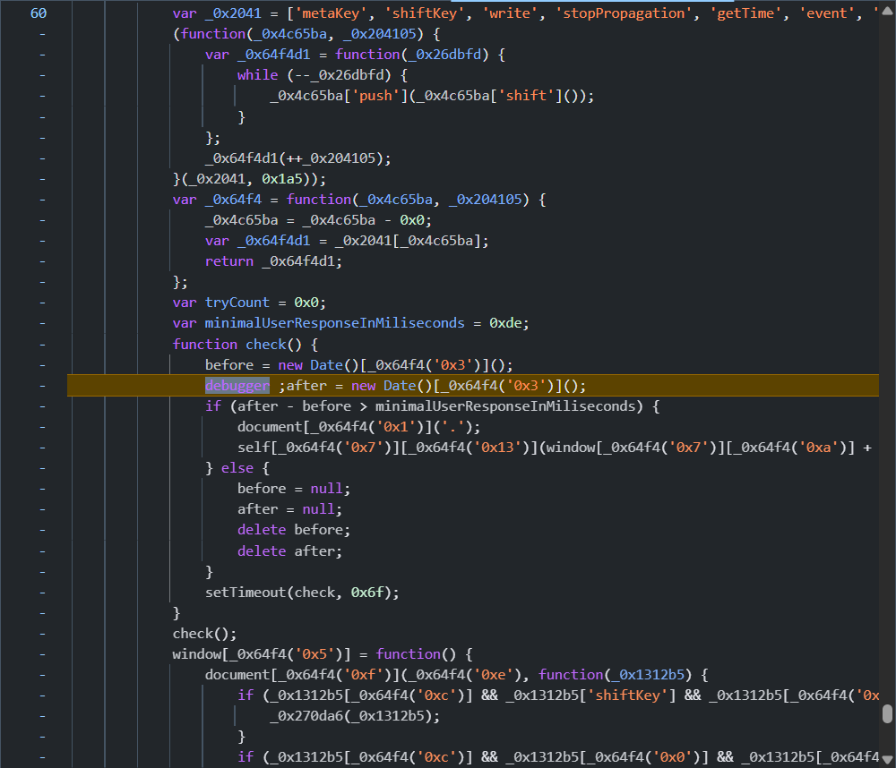
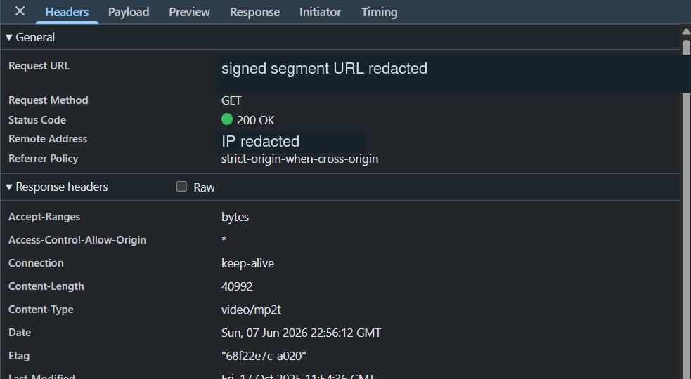
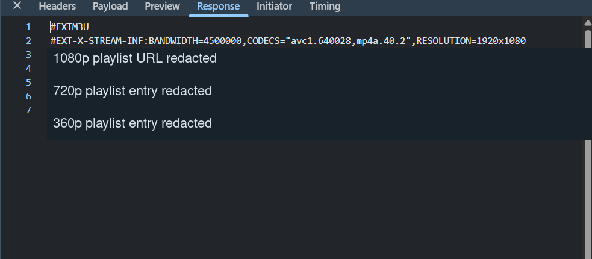
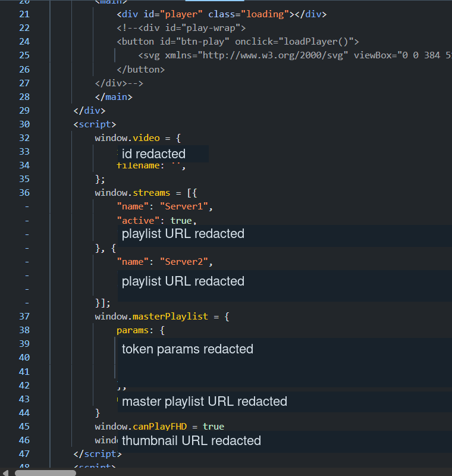

I Got Annoyed by Ads on a "Free" Streaming Site (Aye aye captain!), So I Reverse-Engineered Its Entire Video Pipeline
It had way too many ads and I just wanted a direct solution. What began as a quick look into an overly aggressive frontend ended with reverse engineering the player, bypassing anti-debugging logic, extracting the HLS manifest, and building a Python PoC.
Disclaimer: This post is purely a technical analysis of client-side web technologies: HLS streaming, JavaScript anti-debugging, and server architecture. I'm not linking to, naming, or endorsing any specific site. Everything discussed here uses standard web APIs fully visible in any browser's developer tools.
Step 1: Why Does Opening DevTools Break the Page?
The instant I opened Chrome DevTools, the video page locked up. The Sources panel showed
execution paused on a debugger statement inside a wall of obfuscated JavaScript.

Here's what's visible in the code:
- A
check()function runs on a recurring timer viasetTimeout(check, 0x6f). - It records a timestamp before and after a
debuggerstatement usingnew Date(). - If the gap exceeds
minimalUserResponseInMiliseconds(set to0xde), it hits a branch that calls intodocumentandself(the exact action is obfuscated). - If not, it nulls out the timestamps and loops again.
The fix was trivial: comment out the debugger statement lol.
Step 2: Following the Bytes
With the debugger out of the way, I switched to the Network panel and hit play. Requests started rolling in: small, sequential chunks of binary data.

What the response headers confirmed:
- Content-Type:
video/mp2t: MPEG Transport Stream segments, confirming HLS streaming. - Content-Length: 40992: Small, uniform chunks fetched sequentially.
- Accept-Ranges: bytes: The server supports byte-range requests.
- Connection: keep-alive: Persistent connections for the segment fetch chain.
- Request URL: A signed URL (redacted), with auth tokens baked into the query string.
Step 3: The Playlist
Knowing the segments were HLS, I looked for the manifest. It was right there in the
Network panel: a standard #EXTM3U master playlist:

What the playlist contained:
#EXT-X-STREAM-INFwithBANDWIDTH=4500000,CODECS="avc1.640028,mp4a.40.2",RESOLUTION=1920x1080(a 1080p variant with H.264 video and AAC audio).- Two additional redacted entries for 720p and 360p variants.
- Each variant points to a separate rendition playlist URL (redacted).
Standard HLS hierarchy: master playlist, rendition playlists, .ts segments.
Step 4: Where Does It All Come From?
The last question: how does the player get the playlist URL? I inspected the initial
page HTML and found the answer. Everything was injected inline via <script> tags:

window.video = {
id: /* redacted */,
filename: '',
};
window.streams = [{
"name": "Server1",
"active": true,
/* playlist URL redacted */
}, {
"name": "Server2",
/* playlist URL redacted */
}];
window.masterPlaylist = {
params: {
/* token params redacted */
},
/* master playlist URL redacted */
};
window.canPlayFHD = true;window.video: Video ID and filename.window.streams: Two video servers (Server1,Server2), withServer1markedactive: true.window.masterPlaylist: Master playlist URL with authentication token parameters.window.canPlayFHD = true: A boolean flag for full HD playback.- The page also contained a
<div id="player" class="loading">and a<button id="btn-play" onclick="loadPlayer()">.
All of this was available in the initial HTML response, meaning no follow-up API calls were needed to reconstruct the config.
The Full Request Chain
1. Browser loads embed page
2. HTML response contains inline <script> with:
- window.video (metadata)
- window.streams (Server1, Server2 with signed playlist URLs)
- window.masterPlaylist (URL + token params)
3. Player fetches master playlist (#EXTM3U)
4. Master playlist lists quality variants:
- 1080p: 4.5 Mbps, avc1.640028 + mp4a.40.2, 1920x1080
- 720p, 360p (details redacted)
5. Player fetches rendition playlist for selected quality
6. Rendition playlist contains .ts segment URLs
7. Player fetches video/mp2t segments (~40KB each)Proof of Concept
Once I understood the full chain, I wrote a quick Python script to automate it. Three requests, a couple of regex pulls, and you've got a direct HLS playlist URL: no browser, no ads, no pop-ups.
import re
import sys
import requests
movie_id = sys.argv[1]
headers = {
"accept": "application/json, text/plain, */*",
"accept-language": "en-IN,en-GB;q=0.9,en-US;q=0.8,en;q=0.7",
"cache-control": "no-cache",
"pragma": "no-cache",
"priority": "u=1, i",
"referer": f"https://SITE_DOMAIN/movie/{movie_id}",
"sec-ch-ua": '"Chromium";v="148", "Google Chrome";v="148", "Not/A)Brand";v="99"',
"sec-ch-ua-mobile": "?0",
"sec-ch-ua-platform": '"Windows"',
"sec-fetch-dest": "empty",
"sec-fetch-mode": "cors",
"sec-fetch-site": "same-origin",
"sec-fetch-storage-access": "active",
"user-agent": "Mozilla/5.0 (Windows NT 10.0; Win64; x64) AppleWebKit/537.36 (KHTML, like Gecko) Chrome/148.0.0.0 Safari/537.36",
}
base = "https://SITE_DOMAIN"
# Step 1: Hit the API to get the embed URL
r = requests.get(f"{base}/api/movie/{movie_id}", headers=headers)
embed_url = r.json()["src"]
# Step 2: Fetch the embed page, extract config from inline JS
r = requests.get(base + embed_url, headers=headers)
html = r.text
playlist_url = re.search(r"url:\s*'([^']+)'", html).group(1)
token = re.search(r"'token'\s*:\s*'([^']+)'", html).group(1)
expires = re.search(r"'expires'\s*:\s*'([^']+)'", html).group(1)
# Step 3: Build the signed master playlist URL
final_url = f"{playlist_url}?token={token}&expires={expires}"
print(final_url)The script maps directly to the request chain described above:
/api/movie/{id}returns a JSON response containing the embed page URL (srcfield).- The embed page HTML contains the playlist URL, token, and expiry (the same
window.masterPlaylistconfig from Step 4), extracted here with regex. - Combine them into a signed URL, and you have a direct HLS playlist.
Playback
The output URL is a standard HLS master playlist. Any player that supports HLS can play it directly:
# mpv
mpv "PASTE_URL_HERE"
# VLC
vlc "PASTE_URL_HERE"No ads. No pop-ups. No anti-debugger traps. Just the video.
What I Actually Learned
What started as a simple desire to watch a video without being bombarded by ads turned into an interesting dive into client-side video players. Here is the core of what I uncovered:
- Timing-based Anti-Debugging: The site relied on a basic
debuggerloop that measured execution time. Simply deactivating breakpoints rendered it useless. - Standard HLS Streaming: The underlying video delivery was just standard HTTP Live Streaming using
#EXTM3Umanifests andvideo/mp2tsegments. - Inline Configuration: The player's entire initial state (metadata, server endpoints, and auth tokens) was baked right into the HTML response, making it trivial to extract without complex API sniffing.
In the end, I got my direct, ad-free solution. The whole detour was a fun reminder that complex-looking obfuscation often hides very standard, easily reverse-engineered web technologies. Surprisingly, this is how a lot of other services run too.